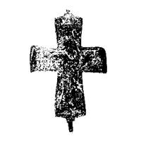
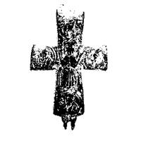

Catalog › CE-0552 · MAR-2
Encolpion bivalv, Premeće
sec. IX–XII (801–1200) · Premeće, lângă Čačak, Serbia · Muzeul Național Čačak (Народни музеј у Чачку), inv. А 1077
double-sided reliquary cross (enkolpion), bronz; c. IX–XII (801–1200); found at Premeće, lângă Čačak, Serbia; kept at Muzeul Național Čačak (Народни музеј у Чачку).




Identificare
- Categorie
- Encolpion bivalv (relicvar)
- Material
- Bronz
- Tehnică
- Turnare în relief
- Dimensiuni
- Î 87 × L 55 mm
Iconografie
- Descriere avers
- Reprezentare în relief, prost păstrată, a lui Hristos răstignit, cu capul căzut spre dreapta; chipul este încadrat de un nimb crucifer slab vizibil; barba redată prin câteva incizii. Din cauza deteriorării brațului vertical de jos nu se poate spune dacă Hristos poartă un colobium lung sau doar o perizomă scurtă în jurul șoldurilor. În colțul stâng al brațului de sus se vede o parte din reprezentarea razelor soarelui; autoarea presupune că în partea deteriorată din dreapta era luna. Pe brațele orizontale se vede grinda de care sunt bătute în cuie mâinile; la capete, îngroșări verticale (urme ale Maicii Domnului și ale Sf. Ioan, după autoare).
- Revers
- Maica Domnului Orantă; Evangheliști în medalioane
- Descriere revers
- Mai bine păstrată. În centru, într-o iconografie naivă, Maica Domnului cu mâinile ridicate în rugăciune (tip Orantă). La capetele crucii medalioane cu chipuri în care se recunosc greu patru evangheliști. Litera «4» incizată în dreapta Maicii Domnului ar putea semna chipul Sf. Marcu sau Matia.
Datare și atribuire
- Datare
- sec. IX–XII (801–1200)
Descoperire
- Localitate
- Premeće
- Regiune
- lângă Čačak
- Țară
- Serbia
- Context
- Descoperire izolată
- Anul
- 1986
- Coordonate
- 43.8914° N, 20.3497° E
- Precizia locului
- Doar localitatea
Păstrare și referințe
- Colecție
- Muzeul Național Čačak (Народни музеј у Чачку)
- Nr. inventar
- А 1077
- Bibliografie
- О. Марковић, Два енколпиона из Народног музеја у Чачку, în „Зборник радова Народног музеја Чачак”, 19, 1989, p. 59–62 [Марковић 1989], p. 60–61, Табла II, сл. 1–2, reprodusă la Табла II, сл. 1–2 (planșă nenumerotată).
- Figura
- Табла II, сл. 1–2
- Planșe
- Табла II (nenumerotată)
- Analogii
- Analogii numeroase; autoarea citează crucea din necropola de la Ravni, mormântul 1 (Muzeul Național Belgrad, inv. 513, Табла II, сл. 3), datată sec. X–XI, și celebra cruce din colecția Lederer. Piesa din Čačak se leagă de acestea doar tipologic: stilizarea figurilor și nivelul de execuție sunt mult mai joase.
- Observații
- Intrată în muzeu în 1986 ca dar; găsită întâmplător la tăierea unui drum local în satul Premeće. Destul de deteriorată: legată cu balama jos, la capătul de sus o ureche fragmentată. Cruce latină cu brațe lărgite. Dimensiuni 8,7×5,5 cm (5,4 cm în rezumatul francez). Datarea este cea din rezumatul francez (sec. IX–XII, prin analogie). Autoarea întreabă dacă astfel de piese prost turnate și naive sunt întotdeauna import sau pot fi produse de ateliere locale. Planșa dă un desen și o fotografie; este folosită fotografia (întunecată). Material: aliaj de cupru, fără precizare suplimentară. Coordonate: ale orașului Čačak (Premeće e în apropiere), aproximative, nu date în sursă.
Citare: Corpus Encolpiorum, CE-0552, Encolpion bivalv, Premeće, --root/piese/MAR-2/ (accesat 2026-10-20).